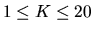

At a certain college, a small parking lot is arranged in a rectangular shape, with
20 spaces numbered 1, 2, 3..... 19, 20. Traffic flow is one way in a counter-
clockwise direction. The lot looks something like this:
______________________________________________________
| |
| 20 19 18 17 16 15 14 13 12 11 |
Exit <<<< < < < < < < < < < |
| v ^ |
Entrance >>>> > > > > > > > > > |
| 1 2 3 4 5 6 7 8 9 10 |
|______________________________________________________|
Note that the first position encountered upon entering is 1 and the last is 20.
Cars may exit or continue to drive in a counter-clockwise direction. The
following assumptions apply to this problem:
- At the start, class is in session and the lot is full (all 20 spaces are occupied by
parked cars).
- In addition to the (20) cars already parked in the lot, K autos are in the lot
waiting for positions to become available. (
)
- Each waiting auto is positioned behind one of the occupied spaces. When
a position empties, the space is filled either by the car waiting at that position or,
if no car is waiting at that position, by the closest car, bearing in mind that the
traffic flow is one way. (There is sufficient room at each position for the car
parked in that position to leave and the car waiting at that position to then park.)
- When an auto advances N positions to a free spot, all other cars advance
N positions. Since the lot is circular, advancing 4 positions from position 18
means advancing to position 2.
- None of the waiting cars exits.
Write a program that reads data from standard input. Input consist of a line indicating the number of datasets, a blank line, and the datasets separated by a blank line. Each dataset is
in two parts. The first part consists of integers, one per line beginning in column
1, representing initial positions of waiting autos. An integer 99 signals the end of
this part of the data. The second part consists of integers, in the same format,
representing positions vacated.
Positions are vacated in the order in which their numbers appear in the second
part of the data.
The output of each dataset should consist a series of lines giving, for each initial
(waiting) car position, the initial position and the final position of that car based
on the description and assumptions stated above. The output lines must appear
in the same order as the order of the initial positions given in the input.
Print a blank line between datasets.
1
6
19
17
13
1
99
1
3
20
16
Original position 6 parked in 16
Original position 19 parked in 3
Original position 17 did not park
Original position 13 parked in 20
Original position 1 parked in 1
Miguel A. Revilla
1999-03-24